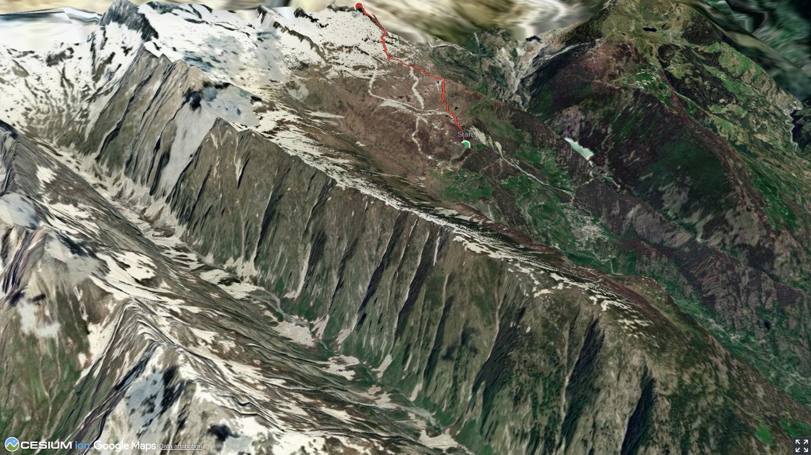

Bernhard Senn is a physiotherapist specializing in workplace ergonomics and workplace health promotion. Bernhard has been an SAC author since 2013 and will often be found 'out and about' in the mountains; whether with rock gear, skis, mountain bike or paraglider.
Quick Facts
| Summit elevation | 3020 m |
|---|---|
| Difficulty | SAC T2 Mountain hiking on marked trails with uneven terrain and some sustained ascent. Guide |
| Trailhead | Belalp |
| Region | Valais Alps |
| Canton | Valais |
| Distance | 5.0 km (out-and-back) |
| Total ascent | ~930 m |
| Elevation range | 2095-3019 m |
| Route sources | SAC Route Portal |
Photos


Planning
↓ Download GPX
i
Map tiles: © swisstopo
(CC BY 3.0) | © OpenStreetMap contributors |
Map library: Leaflet.
Route line is approximate — verify against the SAC Route Portal before going.
5.0 km total
↑ 930 m ascent
↓ 7 m descent
max 3019 m
steepest 33%
i
Trail difficulty per segment: OSM
Elevations computed from the inlined GPX track (SwissTopo height API).
sac_scale (precise T1–T6) with
swissTLM3D Wanderwegart
fallback where OSM is silent (coarser T2/T3 and T4+ buckets).
Coverage: OSM 18.5% · swisstopo 67.5% · unknown 13.7%.Elevations computed from the inlined GPX track (SwissTopo height API).
Loading forecast…
Start: Belalp (2095 m)
Route returns to Belalp.
3D Terrain View

Route Details
S-Grat
Source: SAC Route Portal
Field Reference
| Trailhead | Belalp | 46.37170, 7.97430 |
|---|---|---|
| Summit | Sparrhorn Sparrhoru (3020 m) | 46.40436, 7.98410 |
Coordinates are WGS84 decimal degrees (lat, lon). Emergency: 112 (general) or 1414 (Rega air rescue). Page URL: